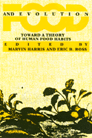

An unprecedented interdisciplinary effort suggests that there is a systematic theory behind why humans eat what they eat
An unprecedented interdisciplinary effort suggests that there is a systematic theory behind why humans eat what they eat


 An unprecedented interdisciplinary effort suggests that there is a systematic theory behind why humans eat what they eat
An unprecedented interdisciplinary effort suggests that there is a systematic theory behind why humans eat what they eat

|  |
Food and EvolutionToward a Theory of Human Food Habitsedited by Marvin Harris and Eric B. Rosspaper EAN: 978-0-87722-668-0 (ISBN: 0-87722-668-7) |
"Many topics of interest to health professionals, such as vegetarianism, dietary fibers, lactose intolerance, favism, cannibalism and changes in nutritional status wrought by the decline of hunter-gathering and the rise of horticulture. Many sections will appeal to the general reader."
—Journal of Applied Nutrition
The old adage "you are what you eat" may be more accurate than anyone could have ever imagined. This unprecedented interdisciplinary effort by scholars in primatology, biological anthropology, archaeology, nutrition, psychology, agricultural economics, and cultural anthropology suggests that there is a systematic theory behind why humans eat what they eat.
Includes discussions ranging in time from prehistory to the present, and from the most simple societies to the most complex, including South American Indian groups, African hunter-gatherers, and countries such as India, Bangladesh, Peru, and Mexico.
"Exceptionally well-edited. High quality individual papers are of comparable scope and are uniformly well referenced and detailed in presentation of supporting data Introductory and concluding chapters as well as section overviews create an integrated whole."
—Choice
"Compelling...complete and...recommended."
—Science Books & Films
"Should be of value to all nutrition educators who have an interest in the social, cultural, and international aspects of foods and nutrition."
—Journal of Nutrition Education
Introduction
Part I: Theoretical Overview
1. An Overview of Trends in Dietary Variation from Hunter-Gatherer to Modern Capitalist Societies – Eric B. Ross
2. Foodways: Historical Overview and Theoretical Prolegomenon – Marvin Harris
Part II: Bioevolutionary Antecedents and Constraints
3. Primate Diets and Gut Morphology: Implications for Hominid Evolution – Katharine Milton
4. Omnivorous Primate Diets and Human Overconsumption of Meat – William J. Hamilton III
5. Fava Bean Consumption: A Case for the Co-Evolution of Genes and Culture – Solomon H. Katz
Part III: Nutritional and Biopsychological Constraints
6. Problems and Pitfalls in the Assessment of Human Nutritional Status – P.L. Pellett
7. Psychobiological Perspectives on Food Preferences and Avoidances – Paul Rozin
8. The Preference for Animal Protein and Fat: A Cross-Cultural Survey – H. Leon Abrams, Jr.
9. Biocultural Consequences of Animals Versus Plants as Sources of Fats, Proteins, and Other Nutrients – Leslie Sue Lieberman
Part IV: Pre-State Foodways: Past and Present
10. The Significance of Long-Term Changes in Human Diet and Food Economy – Mark N. Cohen
11. Life in the "Garden of Eden": Causes and Consequences of the Adoption of Marine Diets by Human Societies – David R. Yesner
12. The Analysis of Hunter-Gatherer Diets: Stalking an Optimal Foraging Model – Bruce Winterhalder
13. How Much Food Do Foragers Need? – Kristen Hawkes
14. Aboriginal Subsistence in a Tropical Rain Forest Environment: Food Procurement, Cannibalism, and Population Regulation in Northeastern Australia – David R. Harris
15. Ecological and Structural Influences on the Proportions of Wild Foods in the Diets of Two Machiguenga Communities – Allen Johnson and Michael Baksh
16. Limiting Factors in Amazonian Ecology – Kenneth R. Good
Part V: The Political Economy and the Political Ecology of Contemporary Foodways
17. Loaves and Fishes in Bangladesh – Shirley Lindenbaum
18. Animal Protein Consumption and the Sacred Cow Complex in India – K.N. Nair
19. The Effects of Colonialism and Neocolonialism on the Gastronomic Patterns of the Third World – Richard W. Franke
20. Stability and Change in Highland Andean Dietary Patterns – Benjamin S. Orlove
21. Social Class and Diet in Contemporary Mexico – Gretel H. Pelto
22. From Costa Rican Pasture to North American Hamburger – Marc Edelman
Part VI: Discussion and Conclusions
23. The Evolution of Human Subsistence – Anna Roosevelt
24. Biocultural Aspects of Food Choice – George Armelagos
Afterword
About the Contributors
Marvin Harris is a Graduate Research Professor of Anthropology at the University of Florida.
Eric B. Ross has taught at Mount Holyoke and the University of Michigan.
Sociology
Psychology
Anthropology
© 2015 Temple University. All Rights Reserved. This page: http://www.temple.edu/tempress/titles/405_reg.html.